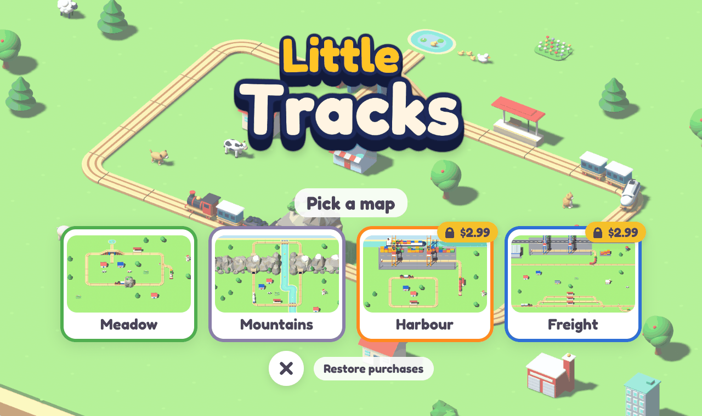
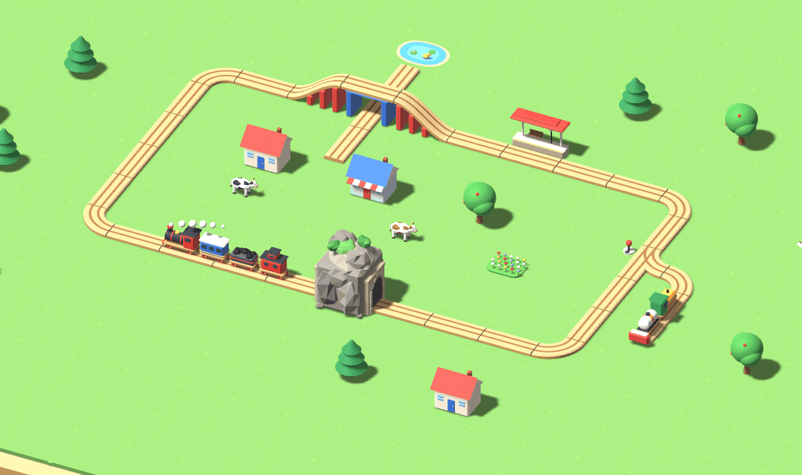
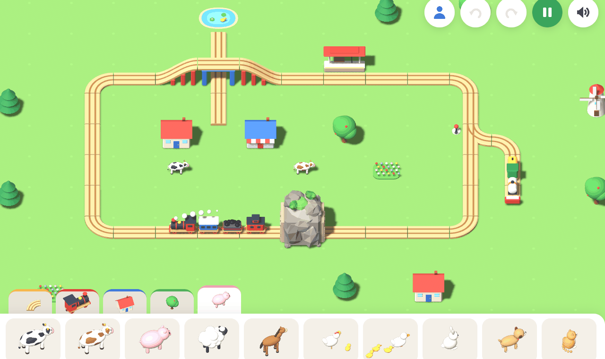
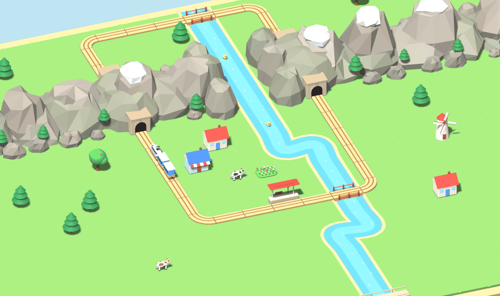
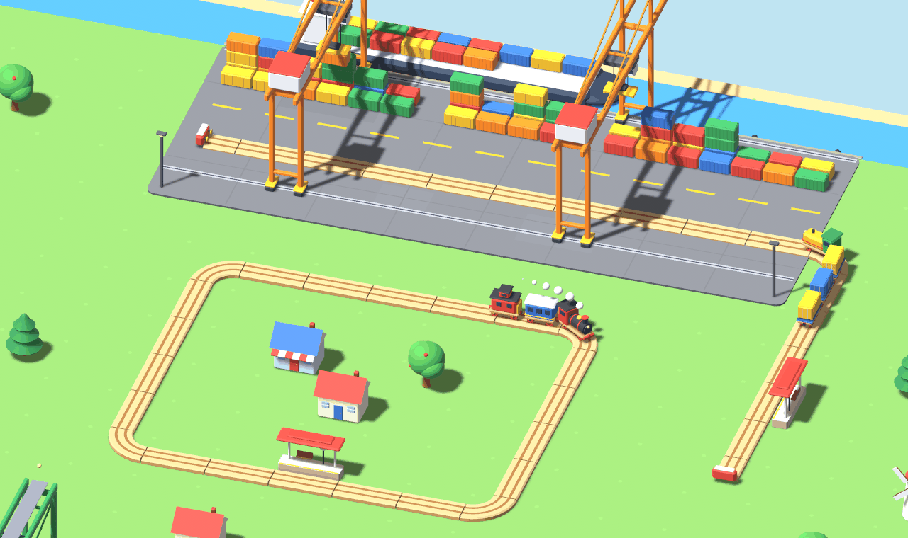
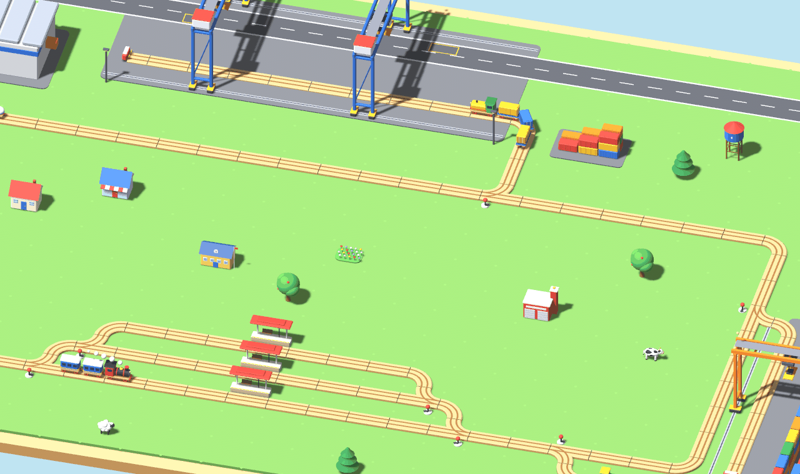

About the game
Little Tracks is a wooden toy train set for little hands. Drag track pieces onto the mat, join them up, and put an engine on: off it goes. Turn pieces with a tap, flip switches, build bridges and tunnels, and fill your world with houses, trees and animals. There's no score and no rush, and no reading needed.


Four maps
Meadow, a sunny green mat to fill with track, and Mountains, with tunnels through a rocky ridge and a river to bridge, are free.

In Harbour the cranes load the container ship until it's full, then it sails away and a new one comes in, while lorries bring more containers to the pile on the other side. In Freight, fill your wagons at the container pile, drive them through the big station with all its switches, and watch the cranes lift the containers onto lorries. Harbour and Freight are optional one-time purchases in the app, behind a grown-ups' check.


What you can do
- Lay straights, curves, switches, a three-way switch, crossings, bridges, ramps, tunnels, stations, signals, level crossings and buffer stops.
- Run steam engines, diesels, an express and a shunter, with coaches, tankers, logs, coal, cows and container wagons.
- Tap a train to stop it, tap again to turn it round. Trains wait for each other and stop at red signals.
- Build a town with houses, a school, a church, a fire station, a lighthouse and a water tower.
- Add cows, pigs, sheep, a horse, chickens, ducks, a bunny, a dog, a cat and a fox.
- Keep up to five games, each on its own map.
- Turn and tilt the view, and zoom in close.
No ads, no accounts and no personal data collected. See the privacy policy. Questions? See support.